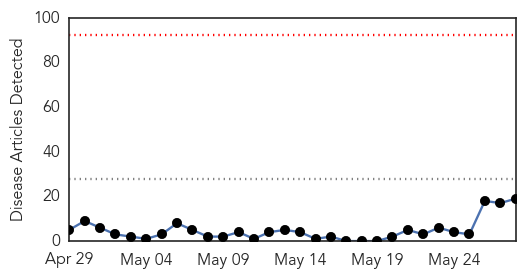
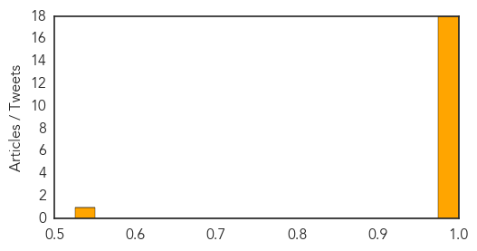

Ebola
30-Day Web Trend
0 alerts, 0 warnings

30-Day Twitter Trend
0 alerts, 0 warnings

Article Locations

Article Confidences
Top Articles:
- 1.000
- West Africa Ebola outbreak still spreading, "situation serious" -WHO
- 1.000
- Relatives remove Sierra Leone Ebola patients from clinic
- 1.000
- UPDATE 1-West Africa Ebola outbreak still spreading, situation serious -WHO
- 1.000
- More Ebola Cases Confirmed In West Africa; WHO Says Outbreak Is ‘Serious’
- 1.000
- West Africa Ebola outbreak still spreading, 'situation serious'
- 1.000
- West Africa Ebola outbreak still spreading, 'situation serious,' WHO says
- 1.000
- WHO: Ebola Virus Is Still Spreading
- 1.000
- Villagers Stone Workers Tracking Ebola in Sierra Leone
- 1.000
- Sierra Leone Ebola patients removed from clinic
- 1.000
- West Africa Ebola outbreak still spreading, 'situation serious': WHO
- 1.000
- Ebola still spreading in West Africa
- 0.999
- Second person dies from Ebola virus in Sierra Leone – BorneoPost Online
- 0.999
- This catchy West African dance tune carries a public health message about Ebola
- 0.999
- Second Person Dies from Ebola Virus in Sierra Leone — Naharnet
- 0.999
- Sierra Leone Ebola patient's family remove her from local health centre
- 0.998
- How Guinea Handles Ebola Misinformation
- 0.989
- West Africa Ebola outbreak still spreading, situation serious: WHO
- 0.988
- Ebola vaccine for chimps works but may never be used
- 0.536
- Page not found
Top Tweets:
- 0.741
- At least 3 people with often deadly, highly infectious ebola taken from clinic by families in Koindu, Eastern SierraLeone - Health Min.
MERS
30-Day Web Trend
5 alerts, 12 warnings

30-Day Twitter Trend
1 alerts, 0 warnings

Article Locations

Article Confidences

Top Articles:
- 0.999
- Middle East respiratory syndrome coronavirus (MERS-CoV) – update
- 0.999
- MERSWatch: 3rd U.S. 'Case' Was False Positive
- 0.999
- 3rd Case of MERS in US Was False Alarm, CDC Says
- 0.999
- Illinois man didn’t have MERS, CDC says
- 0.998
- Deadly virus MERS arrives in Iran with 2 cases reported
- 0.998
- Iran reports first 2 MERS cases
- 0.998
- CDC concludes Indiana MERS patient did not spread virus to Illinois business associate
- 0.998
- CDC: Illinois man didn't have MERS
- 0.997
- CDC says man who met with U.S. MERS patient was not infected after all
- 0.997
- Hoosier businessman didn’t spread MERS after all
- 0.997
- Iran reports first MERS cases weeks before Ramadan
- 0.997
- Secondary US MERS case ruled out; Saudi count grows
- 0.996
- Officials take back report of MERS spread in US
- 0.996
- Nevermind! It Turns Out the Guy Who Tested Positive for MERS Doesn'..
- 0.994
- A definitive blood test indicates Illinois resident was not infected with MERS-CoV
- 0.994
- Iran Reports First Cases of Deadly Virus
- 0.994
- Illinois MERS patient misdiagnosed, was not infected with virus, CDC finds
- 0.992
- CDC: Meeting Did Not Spread MERS
- 0.987
- Coronavirus alert: Screening centre set up at Ahmedabad airport
- 0.985
- Iran Reports Its First Cases Of MERS Virus
- 0.969
- Iran reports its first 2 cases of MERS virus
- 0.968
- Iran reports its first 2 cases of MERS virus
- 0.965
- Pace of MERS infections in Saudi slows
- 0.954
- Three H1N1 deaths in May, no MERS cases, says Oman
- 0.953
- Iran confirms first two cases of Mers
- 0.899
- MERS snuffs out 6 more lives
- 0.888
- 20 new HIV cases reported in Negros
- 0.866
- Indiana farm confirms re-infection by deadly pig virus
- 0.825
- Mangalore may have MERS case
- 0.825
- Mangalore may have MERS case
Top Tweets:
-
No tweets found for May 28, 2014